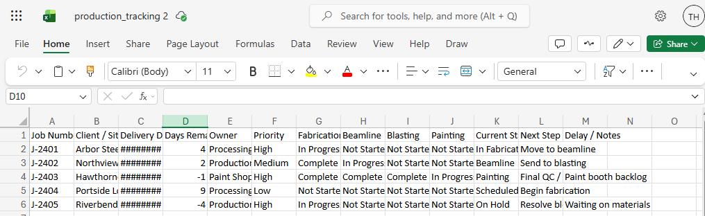
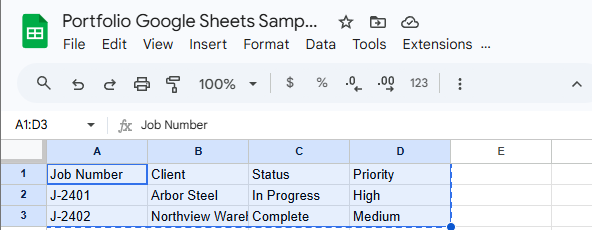
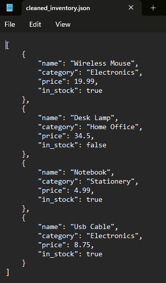
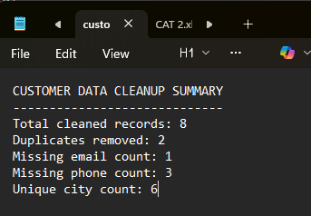
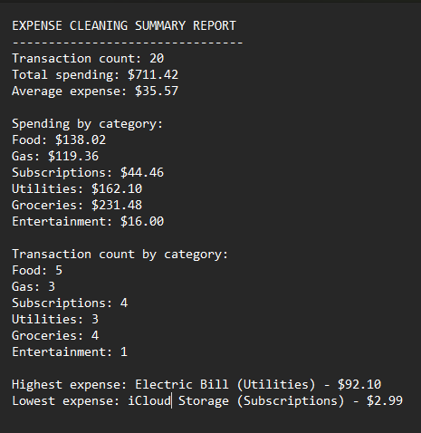
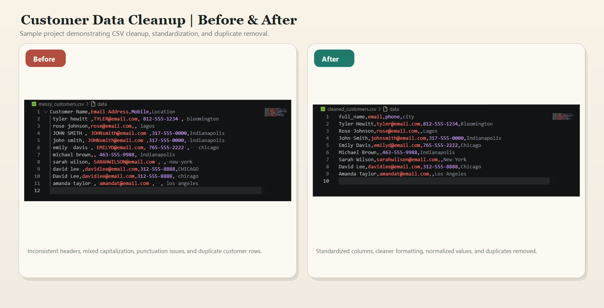
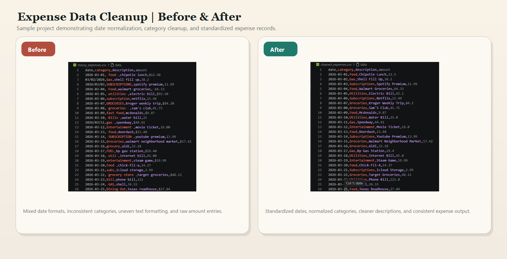

Services
How FlowForgeCo can help with messy business files and structured data
Practical cleanup and organization work for files that need to be easier to review, maintain, and use.
Portfolio
Selected cleanup and spreadsheet work
A mix of customer data cleanup, expense normalization, workbook setup, Google Sheets updates, and JSON cleanup across the file types commonly used in day-to-day business work.
CSV Cleanup
Customer cleanup workflow
Cleaned and standardized customer records with corrected headers, cleaner formatting, and duplicate removal for a more usable contact list.
8 cleaned records
2 duplicates removed
6 unique cities
Result: a cleaner customer file and summary ready for review.
CSV + Reporting
Expense cleaner and summary report
Cleaned expense records by normalizing dates, categories, descriptions, and amounts, then generated a summary report for totals and category review.
25 transactions
$929.26 total spend
6 spending categories
Result: cleaner transaction data with reporting-ready totals.
Excel Workbook
Production tracker generator
Built an Excel production tracker with clear headers, organized columns, and a simple status layout for item and quantity tracking.
Date / Item / Quantity / Status
3 sample production rows
Completed, In Progress, Pending
Result: a ready-to-use workbook for simple operations tracking.
Google Sheets
Shared sheet updater
Updated a shared Google Sheet with structured headers and tracked rows for client, status, and priority review.
Job Number / Client / Status / Priority
2 sample jobs appended
Built for shared review
Result: a cleaner shared sheet for ongoing updates.
JSON Cleanup
Inventory JSON cleanup
Normalized inventory JSON by cleaning names and categories, converting prices to numbers, and preserving stock values.
4 inventory items cleaned
String prices converted to floats
Structured output preserved
Result: a cleaner structured file ready for reuse or reporting.
Project Proof
Additional screenshots and project output
Workbook views, shared sheet layouts, JSON cleanup output, and summary snapshots from completed cleanup work.
Excel

Google Sheets

JSON

Summary

Summary

Case Study
Before-and-after results
Side-by-side views of raw files and cleaned outputs across customer and expense data.
Customer Case Study

Expense Case Study

About
Practical cleanup help for real working files.
FlowForgeCo focuses on improving spreadsheets, exports, and structured records so they are easier to read, maintain, review, and reuse.
Contact
Contact FlowForgeCo
Available for spreadsheet cleanup, CSV organization, Excel support, Google Sheets help, and structured data cleanup projects.
Contact and links
Services and project focus
Practical cleanup work across CSV files, Excel workbooks, Google Sheets, and JSON records, with before-and-after results, workflow screenshots, and organized project samples.